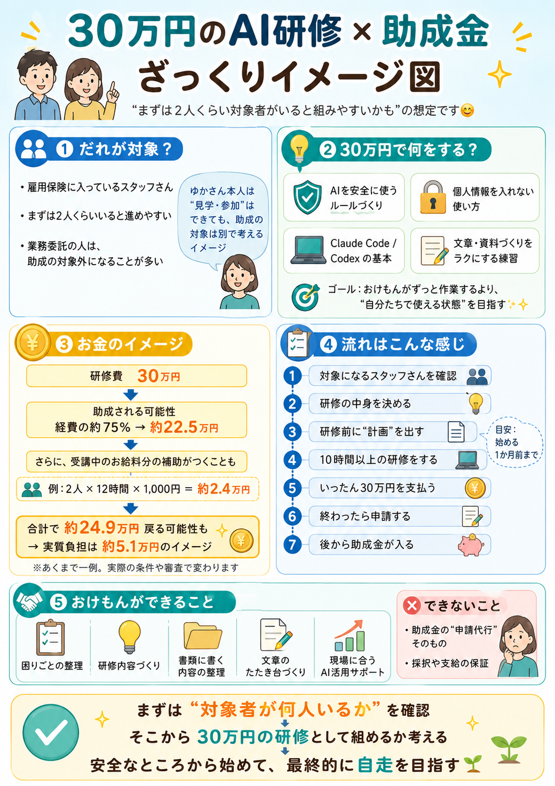

まずは2人くらい対象者がいると組みやすいかも、の想定です
細かい話の前に、お金と流れの全体感です。下に文字でも丁寧にまとめています🌷

皆さまは本業（年間3,000件の判定業務）でとても忙しいです。だから「まずは2人くらいに絞って、10時間以上（12時間想定）でゆっくり始める」のが現実的です🌿
2人×12時間なら、シフトを大きく崩さずに受講可能
研修費上限¥30万 → 立替額も最小で済む
手応えあれば次は人数や時間を増やせます（補助率は同じ75%）
「2人 × 12時間」で組んだ場合の試算です。あくまで一例ですが、実質負担はとても小さくなります。
| 研修費（おけもん側に支払い） | ¥300,000 |
|---|---|
| 経費助成 約75%（厚労省から後日返ってくる） | −約¥225,000 |
| 賃金助成 ¥1,000/h × 2名 × 12時間 | −¥24,000 |
| 戻ってくる合計の目安 | 約 ¥249,000 |
| 実質自己負担（皆さまの最終負担） | 約 ¥51,000 |
※ あくまで一例。実際の条件で変わります🌿
※ 補助金は「後払い」のため、最初は¥300,000を立替→申請→交付（数ヶ月後）の流れになります
※ 受講者2名が雇用保険加入＆研修中が業務時間扱い、という前提での試算です
5/22に皆さまのご意見伺いながら最終確定しますが、たたき台はこちら。「おけもんがずっと作業するより、自分たちで使える状態」を目指します🌿
合計：12時間（助成金の要件「10時間以上」をクリア）
こちらが書類作成のサポート＋研修提供を担当。皆さまは確認・承認・申請がメインになります。
雇用保険加入の方が中心。まずは2人くらいでスタート
左ページの中身（12時間）をベースに、現場に合わせて調整
労働局に研修計画を提出（研修開始の1ヶ月前まで）。書類はおけもんが下書きサポート
おけもんが外部研修機関として実施。出席記録・カリキュラム記録を残します
研修費¥300,000を立替（後から助成金で戻ってきます）
実績報告書・領収書等を労働局へ提出（研修終了から2ヶ月以内）
審査を経て、経費助成75% + 賃金助成が振り込まれます🐷
「2人くらいから組みやすい」想定。雇用保険のあるスタッフさんが中心です🌷
最初に正直にお伝えしておきます🌱
補助金を使うときに「これが揃ってると申請がスムーズ」というものを、5つだけ並べました🌿 難しそうに見えますが、ほとんどのお仕事先で当てはまるはずです。
まずは "対象者が何人いるか" を確認
そこから 30万円の研修として組めるか 考える
安全なところから始めて、最終的に "自走" を目指す🌱
All Documents